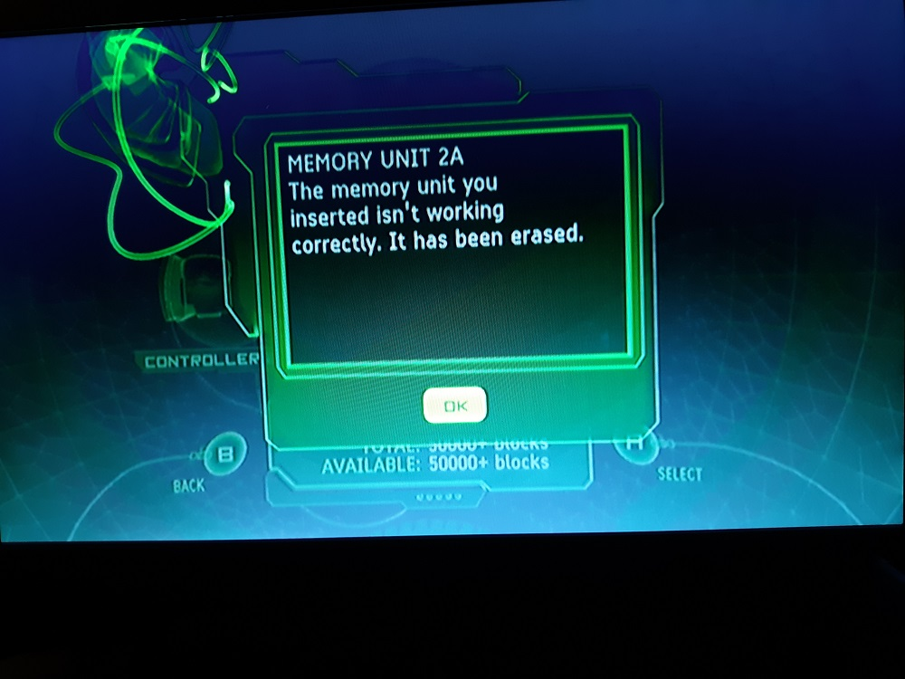
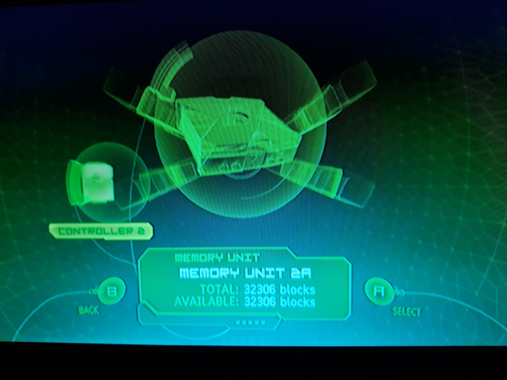
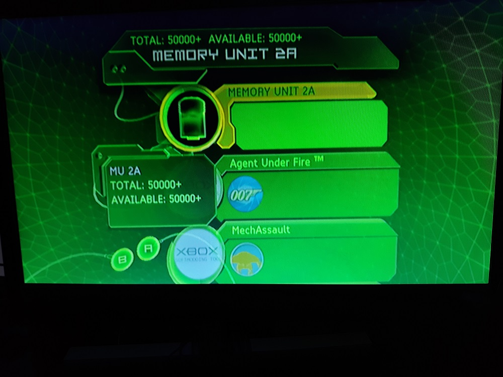
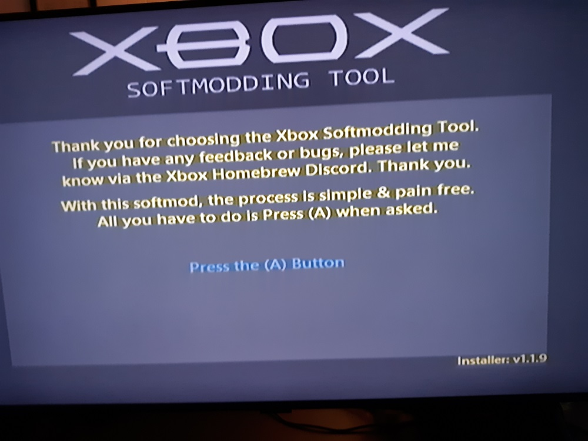
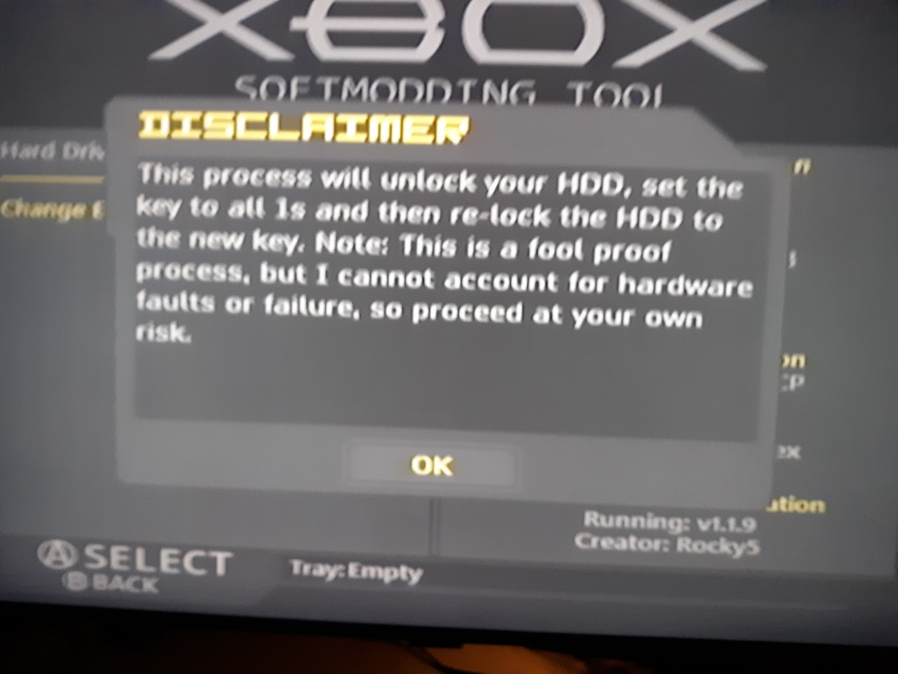
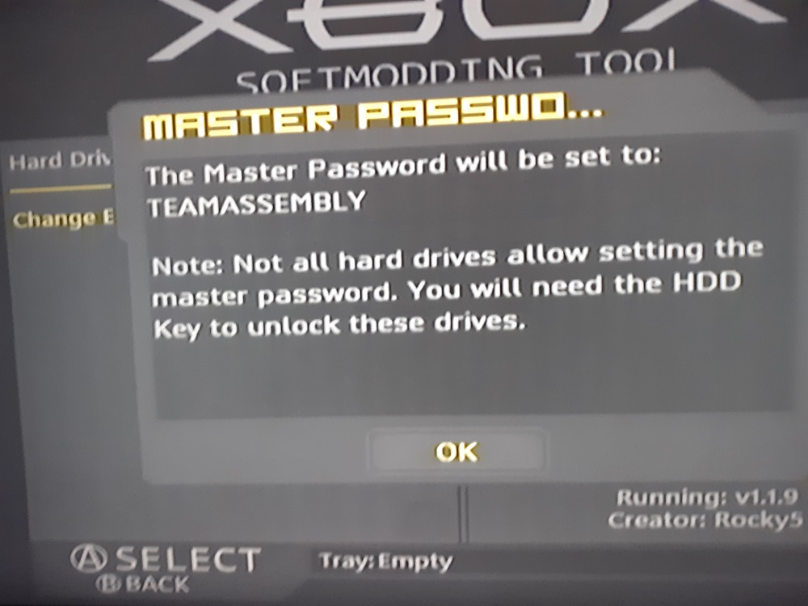
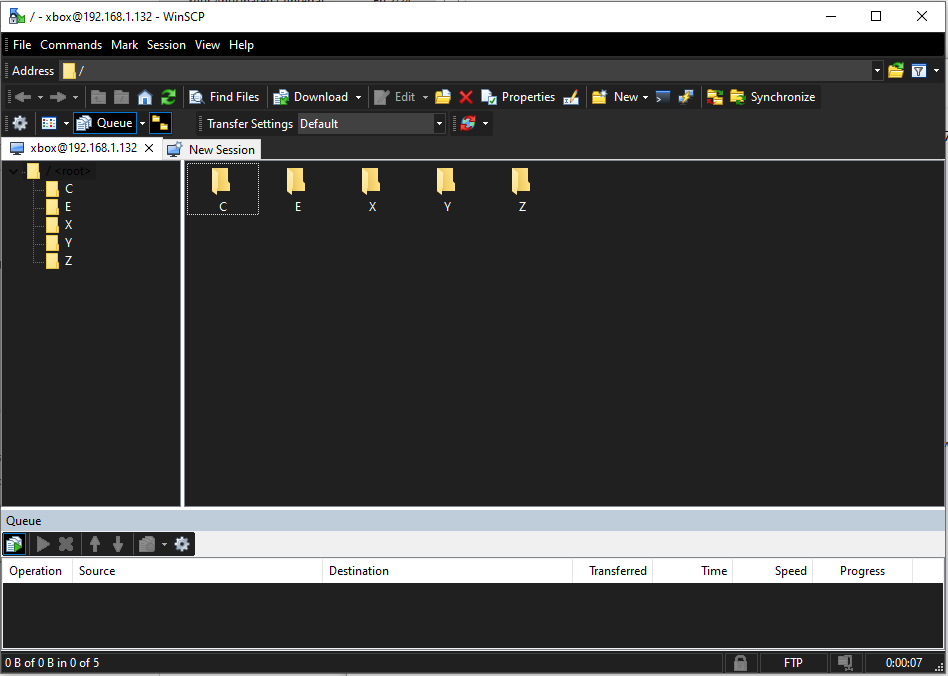
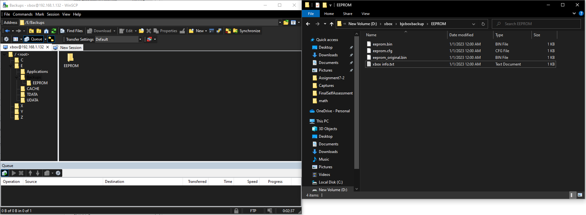

Picked up an OG Xbox from Game Craze and am looking into creating homebrew for it using
nxdk. I followed a video to install the
Rocky5 Softmod from MrMario2011 on YouTube:
https://www.youtube.com/watch?v=lW6QsGXTrFQ.
This one took a while as I hit some roadblocks and had to wait to order stuff:
Plug flash drive into Xbox-controller adapter
Turn on XBOX
Should see message that the flash drive was erased

Go into "memory" and you should see the flash drive

Unplug the flash drive from the xbox & plug it back into computer
Do NOT format disk when prompted
Unzip rocky 5 xbox softmodding tool
Unzip "Xbox Softmodding Tool.zip"
Enter "Softmod Package" dir
"Extract Here" on the mod matching the game you're using (I'm using 007 agent under fire)
should see "UDATA" folder
"Extract Here" on the "Softmod Save" zip
Extract & Open Xplorer360
Click "Drive" -> "Open" -> "Hardrive or Memcard"
Drag and drop the folders in UDATA into the window
Click "Drive" -> "Close" then "Drive" -> "Exit"
Safe Eject the flash drive & remove from pc
Plug flash drive back into xbox
Original flash drived I used didn't work (Xbox didn't recognize it after plugging it back in)
Fixed by switching to a 2GB Sandisk drive
Using the Xbox, copy the saves from the flash drive to the internal hard drive

Boot the game you're using and load the save from the hard drive
007 Agent Under Fire didn't work for me (it gave a blank screen after loading)
After re-watching the video, I think I might have skipped a step needed before loading the save
Ended up using Splinter Cell instead
Load the harddrive copied save after booting splinter cell
brings you to softmod tool screen, press a to run the softmod process

during process, need to reboot then remove disk as soon as reboots
should bring you to softmodded console main menu
changed skin theme to default
clear hard-drive key:
open nkpatcher settings
go to EEPROM->advanced features->Hard Drive->null key


copy/backup EEPROM data:
ftp to XBOX IP with username/pass xbox,xbox

Copy /E/Backups/EEPROM to computer
gives EEPROM folder with eeprom.bin, eeprom.cfg, eeprom_original.bin, xbox info.txt

To run compiled homebrew on the Xbox, you do the following:
FTP to xbox
Make a folder called 'Games' in /E if it does not exist
Make folder in /E/Games to put your homebrew app in
Copy the compiled 'default.xbe' into /e/Games/WhateverFolder via FTP